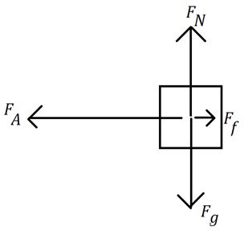

Given:
Unknown:
Equation:
Solve:
Gravity and the normal force are equal in magnitude, so they cancel out in the vertical direction. Let [left] be the positive horizontal direction.
(since friction is always in the opposite direction of movement)
Statement:
The net force on the block is 3.5 N [left].
Given:
[left]
Unknown:
Equation:
Newton’s second law, which is
Solve:
Statement:
The block will accelerate at 14 m/s² [left]
Given:
(convert to kilograms)
Unknown:
Equation:
Solve:
(The coefficient of friction does not have units)
Statement:
The coefficient of kinetic friction is 0.94.